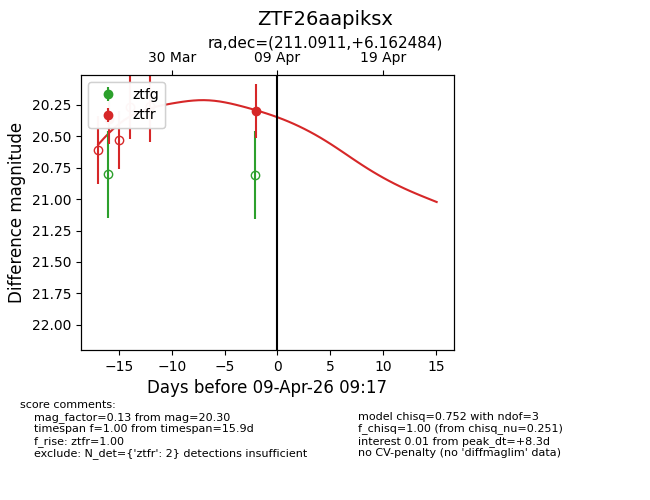
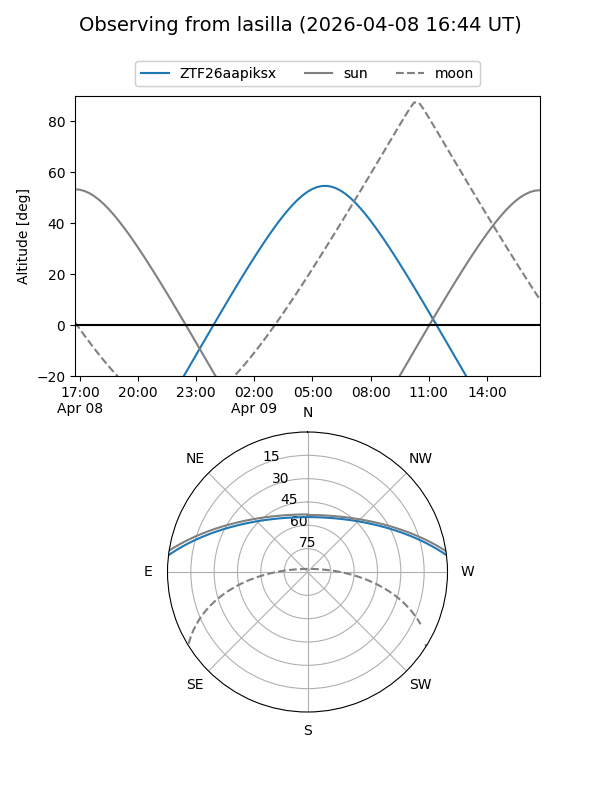
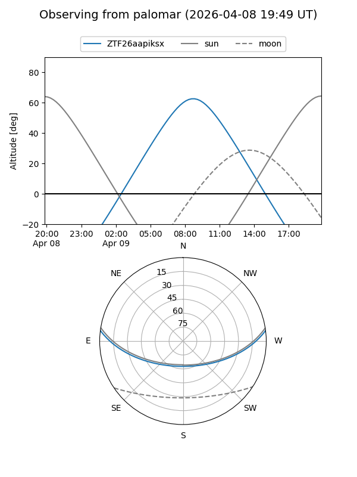
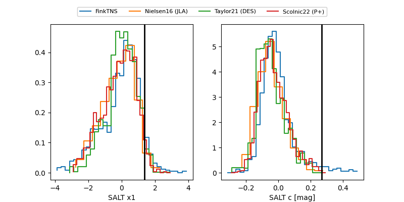

ZTF26aapiksx
Target ZTF26aapiksx at 2026-04-09 09:23
Aliases and brokers:
FINK: link
Lasair: link
ALeRCE: link
alt names
ZTF26aapiksx (ztf,fink_ztf)
Coordinates:
equatorial (ra, dec) = 211.0911,+6.16248
equatorial (HMS+DMS) = 14:04:21.87,+06:09:44.94
galactic (l, b) = (345.8046,+62.79477)
Flags:
Photometry:
last ztfr=20.30
2 ztfr detections
Lightcurve

Visibility


Additional plots
